-
KEEP WATCHING THIS PAGE FOR UPCOMING EVENTS
-
●October 2025: 69th AAAM Conference – Indianapolis, USA
JPRI represented RASSI at the AAAM Conference held at Indianapolis, USA from 7 – 10 Oct. Ms Jeya Padmanaban, President & Founder and Pradeep Jaswani, COO, JPRI attended.
LMIC panel at the conference was represented by JPRI/Pradeep and a presentation was made highlighting the work being done under RASSI initiative. Associated methodologies related to CI, recon and injury analysis and use of RASSI data by members and policymakers {BNCAP} were extensively presented and discussed. Specific focus was on need for advocacy in LMIC groups to reinforce sharing & relevance of injury data for research purposes. Possibility of a different flavour of AIS specifically aimed at LMIC group was also discussed in the sidelines.
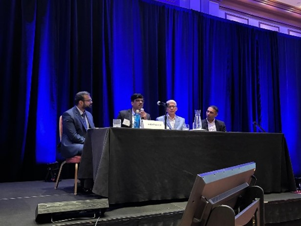
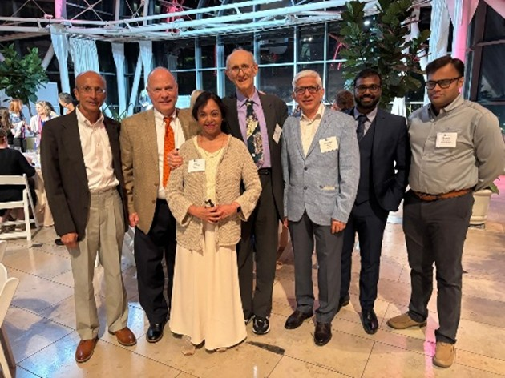
●September 2025: Training on Scientific Crash Investigation at Srinagar
Mr. Sanjay Baladaniya, Senior Automotive Injury Analyst at JP Research India Pvt. Ltd. (JPRI), conducted a training session on “Scientific Crash Investigations” in Srinagar on 26th September 2025. The session was organized by the Asian Institute of Transport Development (AITD), New Delhi. The training emphasized the significance of accurate crash data collection, understanding the methodology of on-scene investigations, vehicle speed estimation, and classification of crash causation factors and resulting injuries using the Haddon Matrix framework. This session formed a part of a three-day specialized course on “Role of MVA and CMVR in road safety & enforcement” designed for police and transport officers. A total of 25 participants from the Police and Transport Departments of Jammu attended the session.
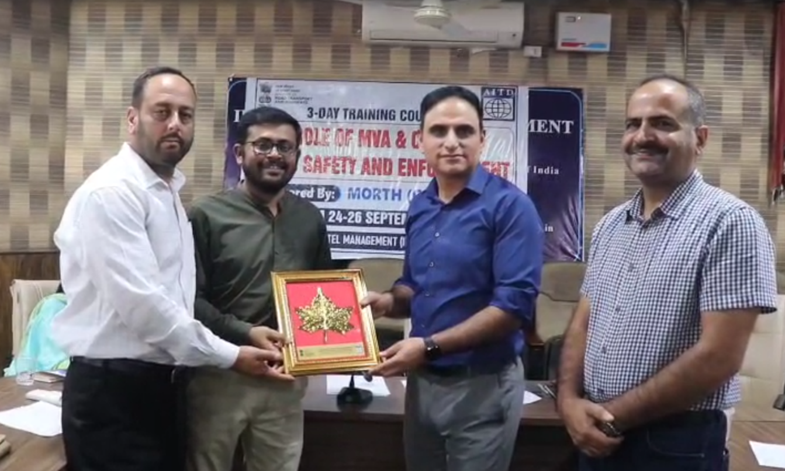
●August 2025: Road safety awareness program for school children & Bus drivers at Bangalore
Mr. Sanjay Baladaniya, Senior Automotive Injury Analyst at JP Research India Pvt. Ltd. (JPRI), conducted a series of road safety awareness sessions for school children and bus drivers in Bengaluru from 18th to 23rd August 2025.The week-long program was organized by the Safety Research Foundation as part of BRACE (Bosch’s Road Safety Awareness and Community Engagement) Initiative. The sessions were conducted across multiple schools in Bengaluru, focusing on enhancing road safety awareness among school children. Mr. Baladaniya emphasized the importance of safe road-crossing practices, the correct use of helmets and seat belts, and the impact of vision obstruction in heavy vehicles. The initiative aimed to instil safe road habits among young students and promote a culture of responsible behaviour among all road users.
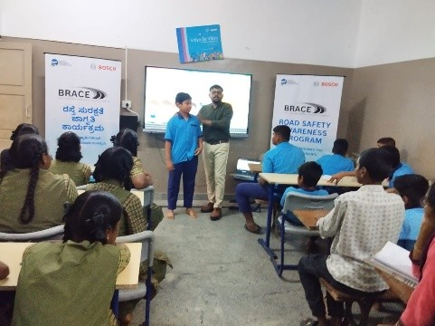
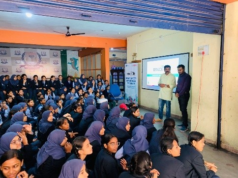
●March 2025: Training on Scientific Crash Investigation Process in Bhandara, Maharashtra
On 25th March 2025, JP Research was invited by the Traffic Inspector of Bhandara district to conduct an introductory session on Scientific Crash Investigation Process. The training took place at the Bhandara SP Office seminar hall and was attended by around 100 police officers from across the district.
Mr. Jigar Soni (Senior Automotive Injury Analyst) and Mr. Saurabh Dhawade (Team Leader – Crash Investigations, Nagpur) led the session, covering key topics such as vehicle and scene examination, identification of contributing factors using the Haddon Matrix, and the importance of adopting scientific approaches in crash investigations.
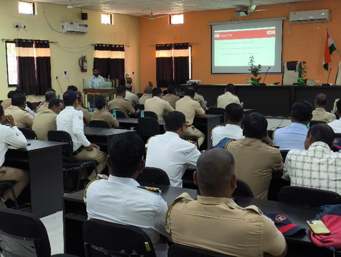
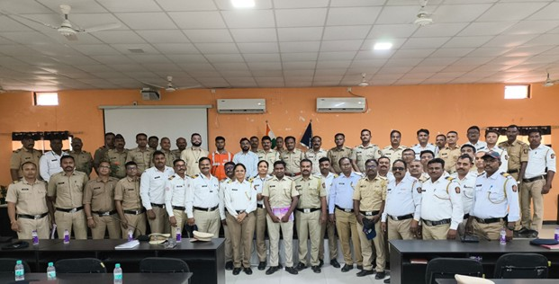
●January 2025: Training on Scientific Crash Investigation at Patna
Mr. Sanjay Baladaniya, Senior Automotive Injury Analyst, JPRI, conducted a training session on “Scientific Crash Investigations” at Patna on 30th Jan 2025. The session was organized by Asian Institute of Transport Development (AITD), New Delhi. This training session was aimed to signify the importance of data collection, to understand the methodology of crash investigations, vehicle speed calculation and classification of causation factors leading to accidents and injuries using Haddon Matrix. This training session was a part of 3-day special course for police and transport officers on Traffic Management and Crash Investigation. A total of 25 participants from police, transport and PWD department of Patna attended the session.
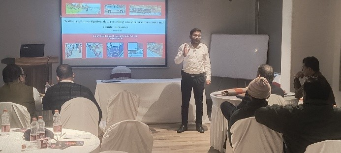
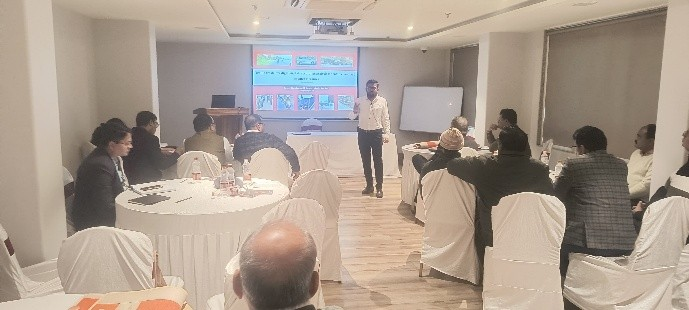
●January 2025: Child Safety Seat Awareness Session in Pune, Maharashtra
As part of National Road Safety Week, JPRI conducted sessions on Child Seat Safety Awareness in Pune. Various aspects covering installation, age-appropriate usage and risks involved with improper use were discussed with parents and stakeholders. Live demonstrations were provided and parents gained hands-on experience by trying the child seats in their own cars, ensuring a practical understanding of the correct usage.
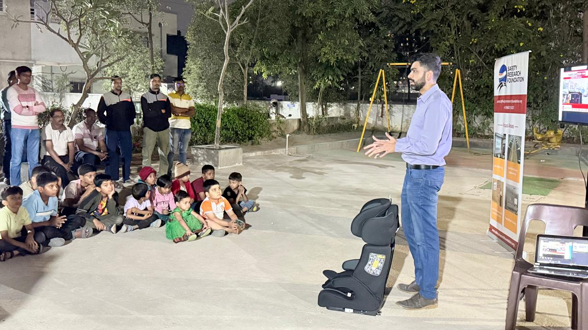
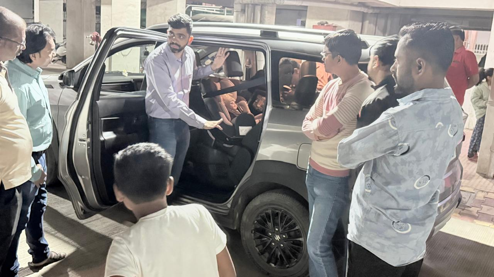
●January 2025: Crash Investigation training/capacity building program for Jaipur Police
Mr. Gaurav Bhargava, Team Leader Jaipur conducted a three-day capacity building program for Jaipur police officials for 7-10 Jan 2025. The program focused on CI practices and evidence analysis.
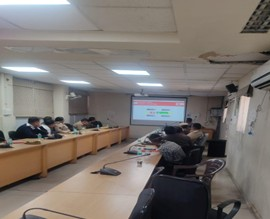
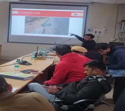
-
●December 2024: Safe Roads 2024 conference organized by Mercedes Benz Research & Development India
JP Research India set up a display stall for the RASSI initiative at the Safe Roads 2024 conference organized by Mercedes Benz Research & Development India at Bangalore on the 10th and 11th December, 2024. The stall gave the attendees a glimpse of RASSI’s expertise in scientific crash investigations and crash analysis. Cdr Pradeep Jaswani, COO JPRI, also gave a presentation on ‘Road Safety – A Scientific Perspective’ at the conference.
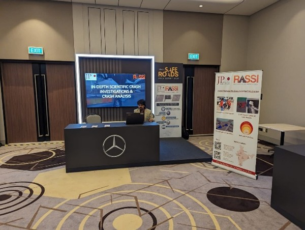
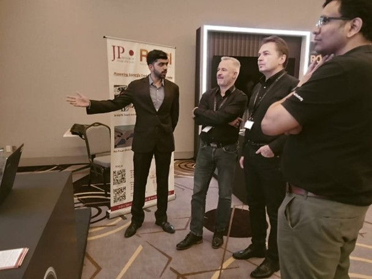
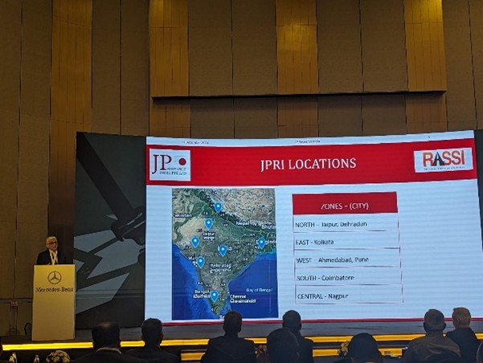
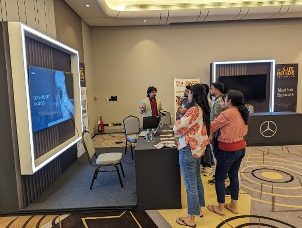
●September 2024: Police Training on Scientific Crash Investigation at CAPT Bhopal
Mr. Jigar Soni, Senior Automotive Injury Analyst, JPRI, conducted one day training session on “Scientific Crash Investigations” at Central Academy for Police Training- Bhopal on 12th Sept 2024. This training session was aimed to signify the importance of data collection, to understand the methodology of crash investigations, vehicle speed calculation and classification of causation factors leading to accidents and injuries using Haddon Matrix. A practical session was also conducted for clarifying methods and concepts of accident scene and vehicle examination. This training session was a part of 5-day special course for Military Police (Indian Army) on Traffic Management and Scientific Crash Investigation. The attendees were Senior officers of the rank of Colonel, Lt Colonel and JCOs.
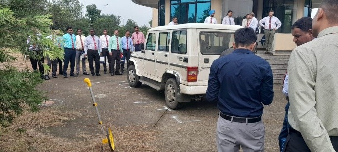
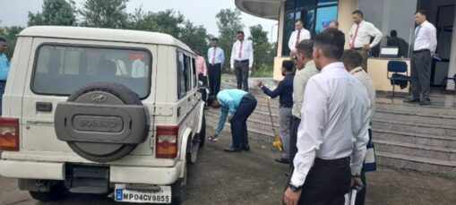
●August 2024: FICCI Road Safety Awards & Conclave 2024
JP Research India Pvt Ltd was declared the Winner under the category “Contribution by Institutes of Higher Education & Research Organisations” at the 6th Edition of the FICCI Road Safety Awards Conclave held at New Delhi on 28th August 2024. JP Research India was awarded for the Road Accident Sampling System India (RASSI) project and the award was presented by Honorable Minister of Road Transport & Highways, Shri Nitin Gadkari ji.
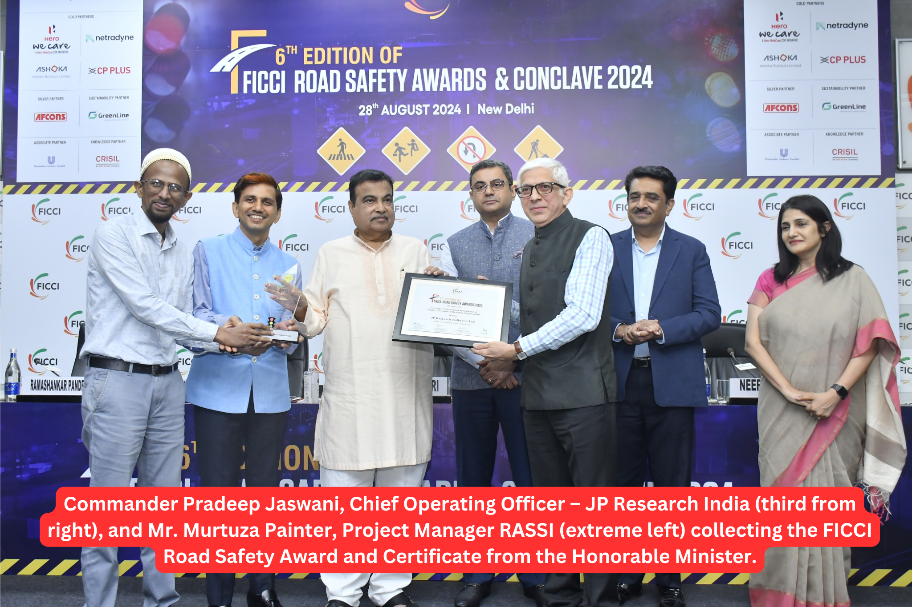
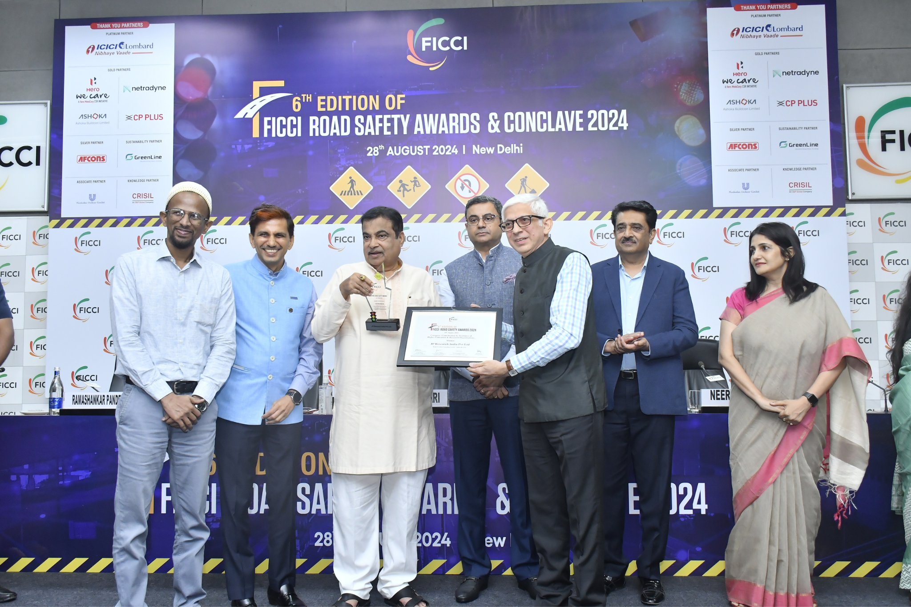
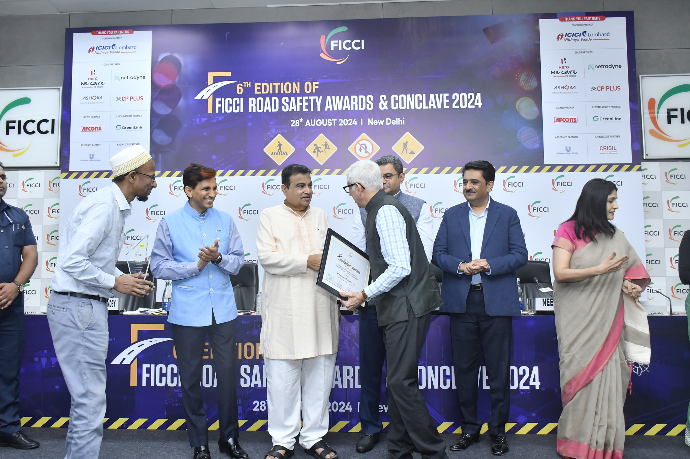
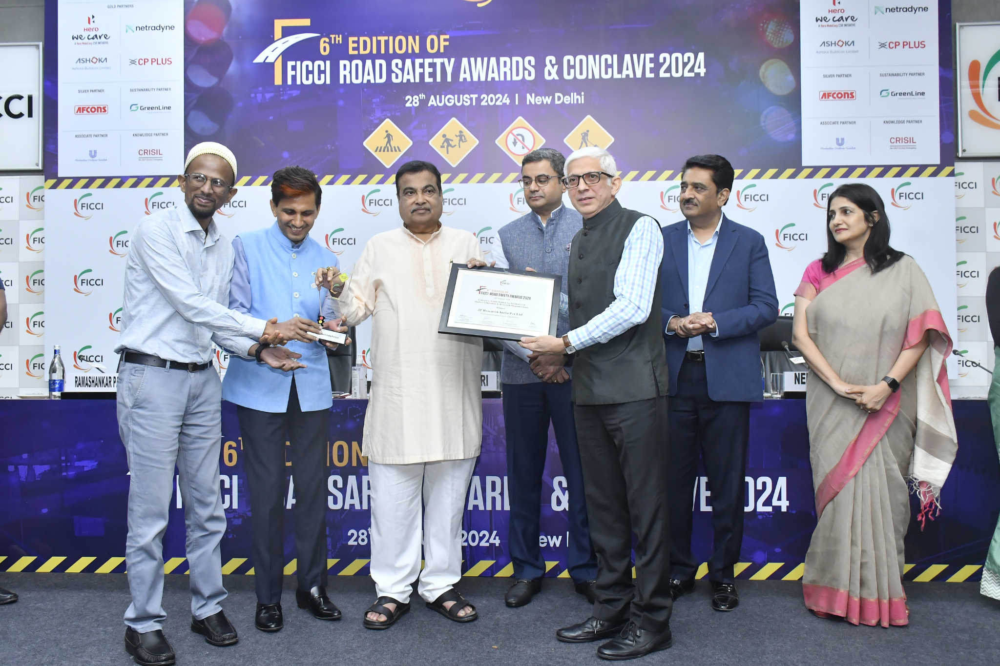
●May-June 2024: Scientific Crash Investigation Workshop for State Transport Undertakings
JP Research training experts delivered one-day and two-day training workshops on scientific crash investigations to Depot Managers and accident investigation teams of the Telangana State Road Transport Corporation (TSRTC) at Hyderabad. The training was delivered in 4 batches and over 200 in-house accident investigators of TSRTC were trained on the best practices in scientific crash investigations.
JP Research also delivered lectures on Introduction to Scientific Crash Investigation to nation-wide State Transport Undertaking Depot Managers at Central Institute of Road Transport (CIRT), Pune.
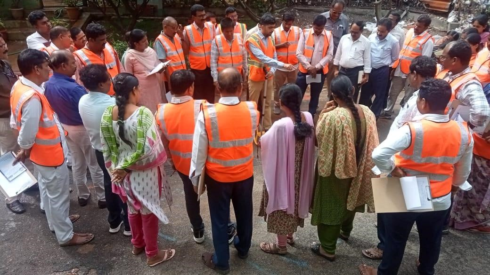
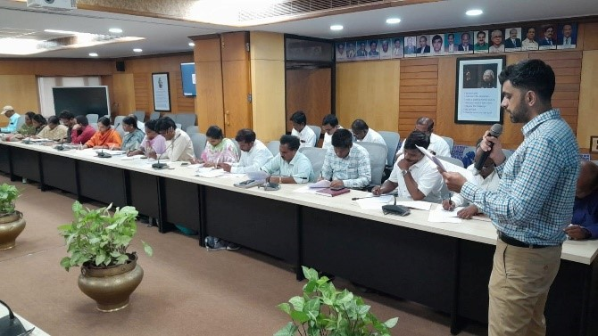
●May 2024: Accident Investigation & Crash Data Analysis- To Answer Who is Responsible
JPRI was invited to deliver a lecture on the topic of “Accident Investigation & Crash Data Analysis- To Answer Who is Responsible”. The session was part of International Road Federation – India Chapter (IRF-IC) lecture series which was held in New Delhi. The participants were professionals, students, policymakers, and interested people in the field of road safety. Mr. Jigar Soni from JPRI conducted the session and interacted with the participants.
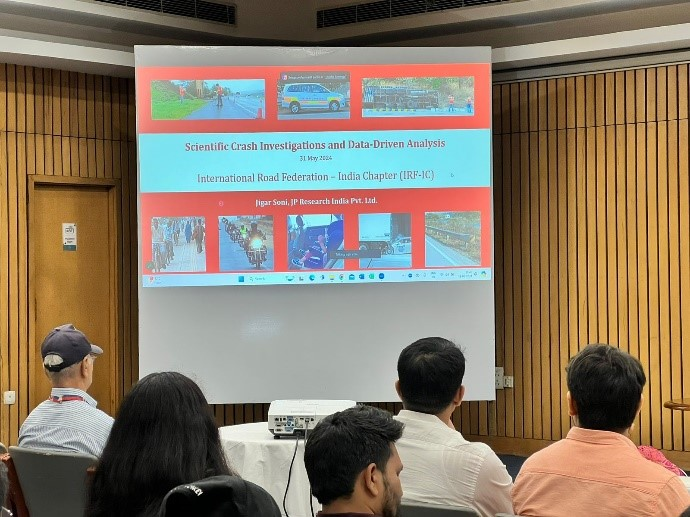
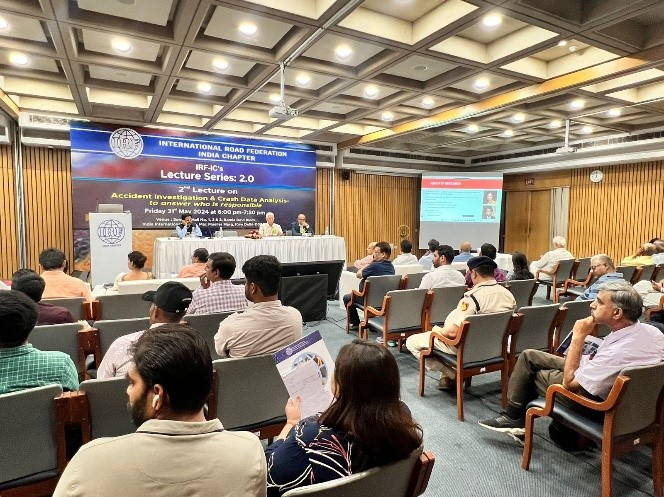
-
July 2023: National Database – Fatal Road Crash System (ND-FRCS)

JP Research Indi Pvt Ltd has joined hands with IIT Delhi/TRIP-C for establishing the National Database – Fatal Road Crash System (ND-FRCS). Project was launched on 05 Jul 2023 in presence of TRIP-C & JPRI teams along with supporting industry partners which include Autoliv, Maruti, Mercedes Benz, Honda2Wheelers & JPRI Inc.
The objective is to derive data-driven insights and empower all stakeholders to take efficient & effective measures for curtailing road accidents and reduce fatalities. In phase-1 of the project, fatal road crashes for eight high incidence States will be coded. Analysis and dashboards will be made available to concerned agencies/stakeholders. The coded data will be hosted in public domain for research & analysis purposes.
-
●August 2022: Road Safety Training for Coimbatore Police Special Task Force
In August 2022, Mr. Aravinth conducted a specialized training session for the Coimbatore Police Special Task Force, focused on advancing road safety initiatives. The training emphasized the effective use of the Integrated Road Accident Database (i-RAD) system to improve the identification of accident hotspots. Key aspects of the session included: Utilizing i-RAD for comprehensive accident data analysis. Identifying and prioritizing accident hotspots for immediate intervention. Developing and implementing targeted countermeasures based on data insights. Enhancing inter-agency coordination to improve road safety management. The training aimed to provide the Special Task Force with the necessary tools and expertise to proactively tackle road safety issues, ensuring safer travel for the Coimbatore community.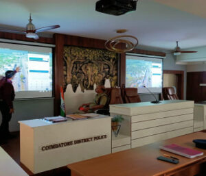
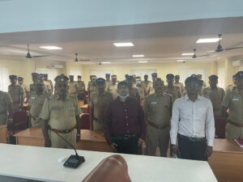
●June 2022: Award for Excellent work in Road Safety
JP Research India Private Limited was awarded for supporting Ahmedabad Traffic Police and excellent work in Road Safety by The Chief Minister of Gujarat, Shri. Bhupendra Patel on 20th June 2022 at CREDAI, Ahmedabad.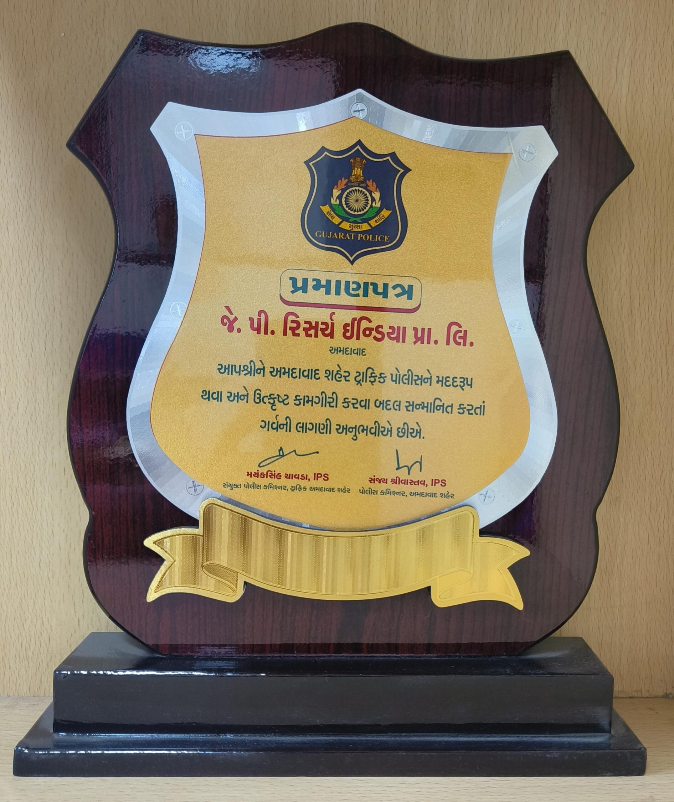
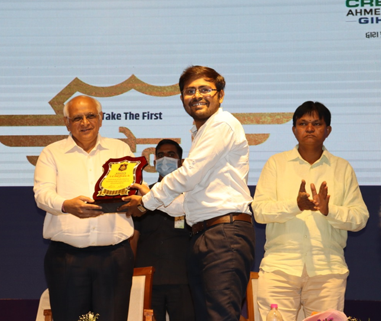
●May 2022: Capacity Building/Crash Investigation Training – Orissa
JP Research India Private Limited conducted “State Level Crash Investigation Training @ Orissa”. The training was conducted for Police Officers and Transport officers and was organised by State Transport Authority, Odisha. Three programs, one each at Cuttack, Talcher and Sambalpur were conducted in May 2022. Training was focussed on methods and techniques of scientific road traffic crash investigations involving crash scene examination, crash vehicle examination and crash reconstruction using Hand Calculation Technique (HCT) and CCTV footage. A mock scene was also prepared to demonstrate crash scene examination to the Police and Transport officers. The trainings were well received and appreciated.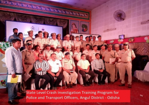
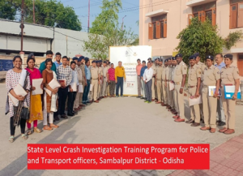
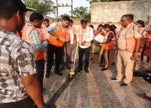
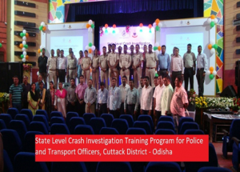
●May 2022: Award from Ahmedabad Traffic Police
JP Research India Private Limited was awarded for supporting Ahmedabad Traffic Police and excellent work in Road Safety by Shri Kiritkumar J Parmar, Mayor of Ahmedabad on 25th May 2022 at Pandit Deendalay Upadhyay Auditorium.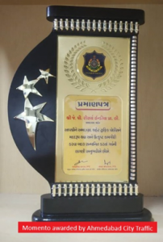
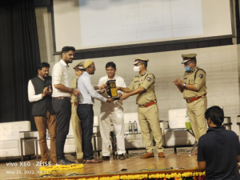
●April 2022: Traffic Flow Study
In association with the office of Deputy Commissioner of Police, Traffic East, Ahmedabad city, JPRI carried out “Traffic flow analysis” at GIDC Naroda & Nana Chiloda circle, Ahmedabad. The study was supported by Naroda GIDC and Ahmedabad traffic police with the aim to decide the time restriction for Heavy vehicles at this stretch. JPRI experts have studied CCTV footages of 4 locations at entry and exit points of Nana chiloda circle to understand traffic volume of all vehicles. The data was analysed in detail and findings along with the additional safety considerations were submitted to Deputy Commissioner of Police, Traffic East, Ahmedabad city. -
●November 2021: JPRI delivered a dialogue on the topic “Road Map for reducing casualties in Road
accidents by 50%” on the “World Day of Remembrance for Road Traffic Victims” at Ahmedabad.
This session was organised by The Rotary Club of Ahmedabad Supreme and Active Traffic
Consultative Committee (ATCC).●October 2021: JPRI delivered presentation on “Crash data needs for road safety planning in India” at the iRAP Innovation Workshop 2021 held on 14 Oct 2021.
Link: https://irap.org/2021/10/event-summary-2021-innovation-workshop/●September 2021: In its capacity as a member of Passive Safety committee of Transport Engineering Department of Bureau of Indian Standards (BIS), JPRI participated in passive safety committee meetings held on 16th June and 17th September.
●September 2021: JPRI presented findings & recommendations on Nagpur Rural Road Safety Study to the Hon’ble Minister MoRTH, Sh Nitin Gadkari at Nagpur.
●September 2021: Workshop on “Crash Reconstruction – Hand Calculation Technique” was delivered by JPRI experts to police officers of Coimbatore Rural District under the aegis of Superintendent of Police, Coimbatore.
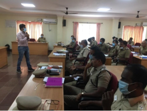
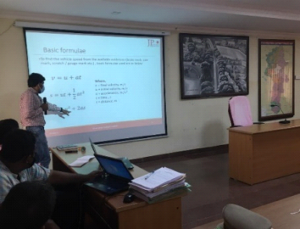
●August 2021: JPRI was invited to present talk on “Road Safety Initiative” speak as part of Global Online Proficiency Improvement Program on Vision Zero conducted by ARAI Academy in association with Volvo Trucks.
●August 2021: JP Research India Pvt Ltd was awarded 3rd Prize in the Gujarat State Road Safety Awards for the year 2020-2021 for its exceptional contribution towards Transportation and Road Safety related activities in the Category “Organizations (Voluntary, Educational, Industrial)”. The Award was presented by Hon’ble Minister R.C Faldu (Minister – Agriculture, Rural Development and Transport – Government of Gujarat) on 10th August 2021.
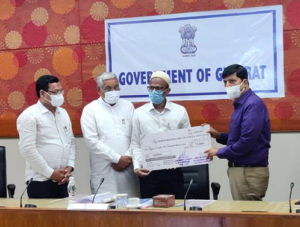
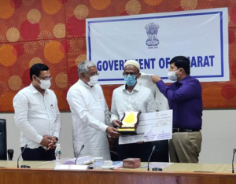
●August 2021: JPRI was invited to deliver a session on “Crash Investigations and Road Safety Engineering” at the “Indian Academy of Highway Engineers” (IAHE), Noida. This was part of the 15 day road safety accreditation course by MoRTH.
●July 2021: JPRI was invited to deliver talk on “Crash Safety Priorities for India based on RASSI In-Depth Crash Data” at the MIT-ADT University’s International Symposium on Vehicle Crash Safety.
●June 2021: As part of the IRF India Chapter Webinar Series on “Road Safety Challenges in India & Preparation of an Action Plan”, JPRI was invited as a speaker at the 6th IRF India Webinar. JPRI presented talk on “Accident / Crash Data Collection & Management”
Link:https://indiairf.com/irf_india_events/6th-webinar-on-the-subject-accident-crash-data-collection-management/●March 2021: JPRI conducted on-line training on “Scientific Crash Investigations and Data-Driven Road Safety Research” for the officials of Transport Department and Traffic Police from Assam, Punjab, Haryana, Uttar Pradesh, New Delhi, Tamil Nadu and Bihar. This Road Safety training was organised by “Asian Institute of Transport Development”.
●February 2021: A session on road safety emphasizing “Seatbelt and Helmet Use” to college and school students at United Institutions, Coimbatore was delivered by JPRI experts. This event was conducted under the Road Safety Month 2021 in co-ordination with Rotary Club of Coimbatore Elite.
●February 2021: As part of the 32nd Road Safety Awareness Program, JPRI delivered a presentation on “RASSI Scientific Crash Investigations – Saving lives through Accident Research” at Nagpur. The presentation was attended by Police Officers (Urban and Rural) and PWD Engineers.
●January 2021: JPRI conducted online training session on “Scientific Crash Investigations and Data-Driven Road Safety Research” for the officials of Transport Department and Traffic Police from Haryana, Assam, Punjab and Bihar. This Road Safety training was organised by “Asian Institute of Transport Development”.
●January 2021: A session on road safety emphasizing “Seatbelt and Helmet Use” to Senior Police officers, Ahmedabad was delivered by JPRI experts. This event was conducted under the Road Safety Month 2021 in co-ordination with Lions club international and Ahmedabad Traffic Police. It was one day seminar with title “Towards excellence in performance for senior police officers” and Mr. Sanjay Srivastava, Commissioner of Police, Ahmedabad was chief guest.
-
●March 2020: Mr. Jigar Soni, Senior Automotive Injury Analyst, conducted a training session on “Scientific Crash Investigations and Data-Driven Road Safety Research” at the “Asian Institute of Transport Development”, Guwahati on 6th March 2020. This training session was aimed to signify the importance of data collection, to understand the methodology of crash investigations and classification of causation factors leading to accidents and injuries using Haddon Matrix. The participants were members of ASTC and Motor Vehicle Inspectors of Assam.
●February 2020: Mr. Sathya Kumar A, Data Analyst conducted a training sessions on topics “Accident Data Recording and Analysis for Better Enforcement” and “Traffic Crash Investigation and Counter Measures” in the training program “Role of CMVA & CMVR in Road Safety and Enforcement” organized by Asian Institute of Transport Development (AITD) on 26 February 2020 at Chennai. This training session was aimed to signify the importance of data collection, to plan and implement enforcement practices and to understand the methodology of crash investigations and classification of causation factors leading to accidents and injuries using Haddon Matrix. The participants were officers from Tamil-Nadu Motor Vehicles Department and Tamil-Nadu State Transport Corporation (TNSTC).
●February 2020: Mr. Vaishnav Jethwa, RASSI – Sr. Accident Reconstructionist has participated in a workshop organised by Gujarat Road Safety Authority (GUJROSA) on 18th February 2020 at Marwadi University, Rajkot. This workshop was attended by Police and RTO personnel of the Rajkot city, City engineers, officers from the Health Department, B.E. and M.E. students of the Civil Department of Marwadi University and other delegates from the different fields. Mr. Jethwa gave a presentation on ‘Scientific Crash Investigations and Data-Driven Road Safety Research’. He has explained methodology of the Scientific Crash Investigation and introduced the Haddon Matrix with the exemplar accident cases.
●February 2020: Mr. Bhuvanesh Bharath Alwar, Project Manager – Road Safety Engineering delivered a training session on “Crash Investigations and Blackspot treatments” at the “Indian Academy of Highway Engineers” Noida, on 14th February 2020. The sessions addressed Highway Engineers from the state of Uttarakhand about safety issues on Indian road network, how to identify and classify concerns to aid in targeted action towards improving the overall road network for India.
●February 2020: Mr. Sanjay Baladaniya, Senior Automotive Injury Analyst, conducted a training session on “Scientific Crash Investigations and Data-Driven Road Safety Research” at the Road safety workshop, Surat organized by Gujarat road safety authority (GUJROSA) on 13th February 2020.This training session was aimed to signify the importance and necessity of accident data collection. The crash investigations methodologies and classification of causation factors leading to accidents and injuries using Haddon Matrix were also discussed during the session. The attendees were officers from Police, RTO, Surat Municipal corporation (SMC), Road & Building department(R&B), Students and professors from SVNIT. Its was an interactive session and the presentation was well received by the audience.
●January 2020: Bhuvanesh, Road safety engineer delivered a one-day training on 22nd January 2020 to highway engineers at IAHE as part of road safety auditor certification course on crash investigation, road infrastructure concerns, focusing on the importance of systematically collected data and how to use that data to develop safer infrastructure
●January 2020: On 21 January 2020, Mr. Aravinthkumar Jayaraman, Automotive Injury Specialist and RASSI – Injury Research Head and Mr. Santhosh Kumar, Team Leader Crash Investigation – Coimbatore, met Mr. Sujit Kumar I.P.S, Superintendent of Police, Coimbatore (Rural) and submitted the Coimbatore Rural Road Accident Study Report 2018 (January to December 2018) and Accident Research Status Report Coimbatore 2019 (January to September 2019).
●January 2020: Mr. Aravinthkumar Jayaraman, Automotive Injury Specialist and RASSI – Injury Research Head, gave a presentation on “Crash Data Findings of Coimbatore” as a part of India Against Road Crash 2020 initiative at Robert Bosch Engineering and Business Solutions Pvt. Ltd., Coimbatore on 17 January 2020 .The presentation gave an insight on the top contributing factors for accident and injury causation in Coimbatore and also emphasized safe driving practices.
●January 2020: Mr. Murtuza S. Painter, Project Manager RASSI Division conducted a training session on “Scientific Crash Investigations and Data-Driven Road Safety Research” at the “Asian Institute of Transport Development”, Gandhinagar on 3rd January 2020. This training session was aimed to signify the importance of data collection, to understand the methodology of crash investigations and classification of causation factors leading to accidents and injuries using Haddon Matrix.The participants were members of Gujarat Road Safety Authority, Motor Vehicle Inspectors, and Police officers of Gujarat.
●January 2020: Mr. Jigar Soni, Senior Automotive Injury Analyst, conducted a training session on “Scientific Crash Investigations and Data-Driven Road Safety Research” at the “Asian Institute of Transport Development”, Varanasi on 10th January 2020. This training session was aimed to signify the importance of data collection, to understand the methodology of crash investigations and classification of causation factors leading to accidents and injuries using Haddon Matrix. The participants were members of UPSRTC, Nagar Nigam and Traffic Inspectors of Uttar Pradesh.
-
●December 2019: Bhuvanesh Bharath Alwar, Road safety engineer delivered a session on intersection safety and calculations related to traffic signal timing to high ranking police officials at National Police Academy, Hyderabad on 19th December 2019.
●December 2019: Mr.Sreyas Erande and Mr.Vishal Waykar, Jr.Accident Reconstructionist, RASSI Division conducted a training session on “Scientific Crash Investigation” at the “Central Institute of Road Transport”, Pune on 14th December 2019. This training session was aimed to signify the importance of data collection, to understand the methodology of crash investigations and classification of causation factors leading to accidents and injuries using Haddon Matrix. Major focus of the training was on vehicle inspection and scene inspection as the participants were newly appointed Assistant Motor Vehicle Inspectors (AMVI), Maharashtra. The training was attended by 100 participant
●December 2019: Mr. Rohan Govardhan, Project Manager-Forensic Crash Investigation, conducted a training session on “Scientific Crash Investigations and Data-Driven Road Safety Research” at the Training Program on Road Safety conducted by the Asian Institute of Transport Development, at Pune on 13th December 2019. This training session was aimed to signify the importance of data collection, to understand the methodology of crash investigations and classification of causation factors leading to accidents and injuries using Haddon Matrix.
●December 2019: Mr. Murtuza S. Painter, Project Manager RASSI Division conducted a training session on “Scientific Crash Investigations and Data-Driven Road Safety Research” at the “Asian Institute of Transport Development”, Chandigarh on 5th December 2019. This training session was aimed to signify the importance of data collection, to understand the methodology of crash investigations and classification of causation factors leading to accidents and injuries using Haddon Matrix.
●November 2019: Mr. Jigar Soni, Automotive Injury Analyst and RASSI Project leader-Jaipur conducted a training session on “Scientific Crash Investigations and Data-Driven Road Safety Research” at the “Asian Institute of Transport Development”, Jaipur on 22nd November 2019. This training session was aimed to signify the importance of data collection, to understand the methodology of crash investigations and classification of causation factors leading to accidents and injuries using Haddon Matrix. The participants were members of Road Safety Cell, Rajasthan and Motor Vehicle Inspectors, Rajasthan.
●November 2019: Mr.Vishal Waykar presented a technical paper on “Effectiveness of rear underride protection devices in rear underride crashes in India” at Safe Roads India Summit 2019, Delhi on 21st November 2019.
●November 2019: Mr. Murtuza S. Painter, Project Manager RASSI and Crash Investigation Unit conducted a training session on “Scientific Crash Investigations and Data-Driven Road Safety Research” at the “Asian Institute of Transport Development”, Delhi on 8th November 2019. This training session was aimed to signify the importance of data collection, to understand the methodology of crash investigations and classification of causation factors leading to accidents and injuries using Haddon Matrix.
●October 2019: Bhuvanesh Bharath Alwar, Road Safety Engineer, JPRI, was invited by IAHE , New Delhi on 18th October to deliver a day long training on crash investigation and road safety concerns on Indian Roads to engineers and highway professional, as part of a certified Road Safety Auditor training organised by IAHE.
●October 2019: Mr. Balakumar Selvaraj, Road Safety Engineer conducted a training session on “Crash Investigation and data collection techniques” focusing on road safety engineering as part of Road Safety Audit training session hosted by Asian Institute of Transport Development (AITD) on 17th October at Double tree hotel, Goa
●October 2019: JPRI has successfully conducted the third edition of PC-Crash Accident Reconstruction Workshop on 17-18 October 2019 at Courtyard Marriott, Mumbai International Airport. Participants from various insurance companies and OEM/suppliers have attended the workshop. Participants were given hands-on experience to reconstruct the real-world accidents using the PC-Crash software at the workshop. The workshop has given so many insights to the participants to contemplate and deal the accident cases in future. The training was well received and the participants have appreciated the efforts taken by JPRI to conduct the workshop
●September 2019: Mr. Murtuza S. Painter conducted a seminar on “Accident Research & Scientific Crash Investigations” at the “Adani Institute of Infrastructure Management”, Ahmedabad on 27 September 2019. This lecture was aimed to signify the importance of data collection, to understand the methodology of crash investigations and classification of causation factors leading to accidents and injuries using Haddon Matrix. The presentation also touched upon the need of accident data for implementing data driven strategies to reduce accidents and mitigate injuries in India with an example of “Road Accident Sampling System-India” (RASSI) initiative.
●September 2019: Mr. Vaishnav Jethwa, Project Leader – Ahmedabad branch gave a presentation on “Scientific Crash Investigation” at the “Media Workshop” organised by Centre for Environment Education (CEE) on 23rd September 2019 in Ahmedabad. He has explained about Crash Investigation Methodology and segregation of causation factors using Haddon Matrix in his presentation. Ahmedabad Traffic Police and other eminent media, road safety experts and students participated in the media workshop. The workshop was intended to provide an opportunity to media personnel (print, electronic and social) to explore, discuss, review and act for how the current death traps roads can be transformed to a safer road environment in the state.
●September 2019: Mr. Sathya Kumar A and Mr. Sanjay Baladaniya successfully conducted a two day training on “Crash Investigation and Data collection” to technical service personnel of automotive tire manufactures, organized by ATMA/IITAC on 13 – 14 September 2019 at Crowne Plaza, Pune.
●June 2019: Mr. Murtuza Shabbir Painter, Project Manager – RASSI, delivered a technical presentation on “In-Depth Scientific Data collection for Road Traffic Accidents” at the AD Patel Institute of Technology, Anand, Gujarat on 20th June 2019. The presentation described about the crash data collection procedures and Haddon matrix for categorising contributing factors with an example of “Road Accident Sampling System-India” (RASSI) initiative. The presentation was graced by the faculty members of the Institution from Automobile, Mechanical, Mechatronics and Production department
●May 2019: Mr.Sanjay Baladaniya and Mr. Sreyas Erande of JP Research conducted a one-day crash investigation training on 31st May 2019 for the police officers of Thane district. The training program was organised by the Additional Superintendent of Police, Thane District. The training was attended by 31 participants attending the session at the training hall and around 40 participants were attending through online portal from Ratnagiri, Palghar, Sindhudurg and Raigad district. The attending police officers were from the ranks of Head Constables to Police Sub-Inspectors. During the training, police officers shared some cases they have dealt with in the past and asked few questions on the same. JP Research team gave them new angles to think about and demonstrated how good quality data collection can help understand crashes better.
●April 2019: Mr.Bhuvanesh Bharath Alwar and Mr. Vishal Waykar of JPRI Pune, successfully conducted a training session on “On-site Crash Investigations and Data Collection” for the police officers of Raigad District Police at the Office of the Superintendent of Police, Raigad in Alibagh. The training program was conducted from 1 April – 6 April 2019. The training session finished on 6 April, the day of Gudi Padwa – the Marathi new year – and we hope that the police officers, equipped with motivation and good insight regarding accident research, take that one small step towards better crash investigation and data collection, which will result in a giant leap towards safer Indian roads.
●March 2019: Mr. Ravishankar Rajaraman (Technical Director – JP Research India Pvt. Ltd.) was invited to give a presentation on “Crashes and Road Engineering” at the National Conference on Road Safety organized by MoRTH and the Highway Operators Association of India. The presentation provided information on the use of on-site crash investigation and in-depth accident data collection to understand, measure and mitigate the road safety engineering issues prevalent on Indian highways through a scientific data-driven approach.
●February 2019: Mr. Jay Kakadiya and Mr. Dhairya Jadhav conducted a “Road Safety Awareness Program” at Zydus School of Excellence, Ahmedabad on 18th February 2019. Aim of the program was to spread awareness regarding significance of helmet, seat belt usage, general road safety awareness tips and real life case studies. All the information shared was based on the crashes investigated by JPRI Team. A total of 200 Students from 6th and 7th grade attended the program.
●February 2019: JPRI successfully conducted the second edition of C.R.A.S.H. Days. A 2-day residential PC-Crash Accident Reconstruction workshop on 21-22 February 2019 at L&T Leadership Development Academy, Lonavala. Professionals from various OEMs and insurance companies participated in the workshop and learnt basic crash investigation techniques and reconstruction of accidents using PC-Crash 12.0.
●January 2019: Mr. Vaishnav Jethwa and Mr. Unmit Parmar conducted a “Road Safety Awareness Program” at Eklavya School, Ahmedabad on 31st January 2019. This program was attended by students of 9th grade and provided information on significance of helmet and seat belt usage, general road safety awareness tips and different case studies of road traffic crashes investigated by JPRI.
-
●December 2018: Mr. Murtuza Shabbir Painter, Project Manager – RASSI, delivered a technical presentation on “In-Depth Scientific Data collection for Road Traffic Accidents” at the International Passive Safety Seminar (iPASS-2018); International Centre for Automotive Technology (ICAT), in Manesar on 13th December 2018. The presentation described about the crash data collection procedures and Haddon matrix for categorising contributing factors. The presentation also touched upon the need of accident data for implementing data driven strategies to reduce accidents and mitigate injuries in India with an example of “Road Accident Sampling System-India” (RASSI) initiative.
●November 2018: Mr. Sanjay Baladaniya and Mr. Jay Kakadiya conducted “Road Safety Awareness Program” at Vedant International school, Ahmedabad on 29th November 2018. This was joint initiative by JPRI and Ahmadabad police to conduct road safety awareness program. This program targeted students from class 8th to class 12th. The program pertain to significance of helmet and seat belt usage, General road safety awareness tips and different case studies of road traffic crashes investigated by JPRI.
●October 2018: Mr. Sathya Kumar A, Training Manager delivered a keynote speech on “RASSI Crash Investigation Study and Insights From RASSI Data” at FISITA 2018 World Automotive Congress on 05 October 2018 in Chennai, Tamil Nadu. The presentation discussed the need for in-depth scientific accident data collection in India and then gave an introduction to the Road Accident Sampling System-India (RASSI) initiative. The presentation also discussed about how the crash data can be used for understanding the contributing factors of accidents and to implement data driven decisions to make Indian roads safer.
●October 2018: Mr. Vernon Chinnadurai, Project Leader – Pune, conducted “Road Safety Awareness Program” in “NCL Junior College, Pune” on 4th Oct 2018. The program targeted students of the class 11th and 12th. The program touched upon the importance of motorcycle helmets, seat-belt usage in cars, pedestrian behavior in roads and the perils of speeding through case studies of road traffic crashes investigated by JPRI.
●September 2018: Mr. Jigar Soni, Jr. Crash Investigator-Jaipur, gave a presentation on “Scientific Crash Investigation” at the “Media Sensitizing Workshop on Road Safety” in Ajmer, Rajasthan on 15th September 2018. The workshop was aimed to encourage media to bring real crash summary in news along with faults in Vehicle and Infrastructure which leaded to the accident. The Police were encouraged to do in-depth investigation of accidents to bring out the various factors which leaded to the accident.
●August 2018: Mr. Kiran Joseph Sajeev and Mr. Hiran NK conducted a “Road Safety Awareness Program” at Hindusthan Institute of Technology, Coimbatore on 07th August 2018. This program was to make the students aware of the dangers of non-usage of helmet & seatbelt.
●August 2018: Mr. Murtuza S. Painter and Mr. Vaishnav Jethwa conducted a lecture on “Accident Research & Scientific Crash Investigations” at the “Adani Institute of Infrastructure”, Ahmedabad on 2 Aug 2018. This lecture was aimed to signify the importance of data collection, to understand the methodology of crash investigations and classification of causation factors leading to accidents and injuries. It also focused on various infrastructure issues identified in the study done by JP Research India Pvt. Ltd.
●June 2018: Mr. Prasun Das, Mr. Bhuvanesh Bharath Alwar, and Mr. Balakumar Selvaraj from JPRI Kolkata team, conducted “Road Safety Awareness Program” at wheel drive event organized by “Kolkata on Wheels magazine” on Sunday, 24th June 2018. The program targeted the audience of car enthusiasts in the age group of 30-60. The program touched upon the importance of seat-belt usage, over-speeding, obeying traffic signals and defensive driving supported by real-world cases investigated by JPRI.
●April 2018: Mr. Hiran NK and Mr. Muthu Bharani Dharan from JPRI CBE branch conducted “Road Safety Awareness Program” in PSG College of Technology, Coimbatore on 30-Apr-2018.
●April 2018: Mr. Ravishankar Rajaraman, JPRI Technical Director and Chairman-RASSI Technical Steering Committee, conducted a technical workshop on “Crash Investigation and Reconstruction” at the IRCOBI Asia conference held in Lonavala, Maharashtra from 25th to 27th April 2018.
●April 2018: Mr. Murtuza S. Painter conducted a lecture on “Accident Research & Scientific Crash Investigations” at the “Adani Institute of Infrastructure”, Ahmedabad on 13 April 2018. This lecture was aimed to signify the importance of data collection, to comprehend the methodology of crash investigations and classification of causation factors leading to accidents and injuries.
●March 2018: DNA webpage carried an article (dated 14-March-2018) on the research carried out by JP Research India Pvt Ltd.
DNA Article●February 2018: Mr. Boopathy S and Mr. Hiran NK conducted a “Road Safety Awareness Program” at Amirtha Vishwa Vidyapeetham, Coimbatore on 24 Feb 2018. This program was conducted as a part of the ANOKHA 2018 – 8th National Level Tech Festival. The program was aimed to signify the importance of helmet and seat belt usage among the college students.
●February 2018: Mr. Vernon Chinnadurai, Project Leader – Pune presented on the topic of “In-depth Analysis of Accidents on Mumbai Pune Expressway” in the workshop titled “Safe Transportation of Company Employees” on 03rd February, 2018. The workshop was jointly organized by the Motor Vehicles Department, Government of Maharashtra and Tata Consultancy Services. The presentation detailed on the contributing factor analysis of road traffic crashes investigated by JPRI on the Mumbai Pune Expressway in the calendar year of 2017.
●January 2018: The 8th Annual RASSI Consortium Meeting was conducted in Jaipur on 18th and 19th January 2018.
●January 2018: Mr. S. Rajkamal and Mr. A. Sathya Kumar conducted “Crash Investigation Training” for “Automotive Tire Manufacturers Association (ATMA)” on 17 January 2018 at New Delhi.
●January 2018: Mr. Ajit Dandapani, CEO, JP Research India Pvt. Ltd., participated in the Maruti India Road Safety Mission Conclave 2017 and gave a presentation on “Role of Accident Data Analysis in making India’s Roads Safer”. The presentation discussed the need for detailed crash data and scientific crash investigations in India, and then gave an introduction to the Road Accident Sampling System – India (RASSI) initiative. The presentation also gave details of usage of crash data for understanding contributing factors and how such crash data studies helped reduce fatalities on the Mumbai-Pune Expressway.
Role of Accident Data Analysis in making India’s Roads Safer●January 2018: The Times of India webpage carried an article (dated 14-January-2018) on the research carried out by JP Research India Pvt Ltd.
The Times of India Article●January 2018: The Times of India webpage carried an article (dated 12-January-2018) on the research carried out by JP Research India Pvt Ltd. by using the “Ahmedabad City Road Accident Study 2016” report submitted to the Transport Commissioner, Gujarat. This article included the details of time of accident and the age of victims.
The Times of India Article -
● December 2017: Mahindra & Mahindra joins the RASSI Consortium.
● December 2017: Mr. Vernon Chinnadurai, Project Leader-Pune, conducted “Road Safety Awareness Program” in “Vidyanchal school”, Pune on 20 December 2017. The program targeted the audience of children in the age group of 13-18. The program touched upon the importance of motorcycle helmets, seat-belt usage in cars, pedestrian behavior in roads and the perils of speeding through case studies of road traffic crashes investigated by JPRI.
● November 2017: Mr. Ravishankar Rajaraman, JPRI Technical Director and Chairman-RASSI Technical Steering Committee, gave a presentation on “Understanding Road Traffic Crashes in India through a data-driven approach”. The presentation gave an introduction to scientific crash investigations, as being conducted in India by JP Research India Pvt. Ltd. under the RASSI initiative, through a case study and explained the determination of contributing factors in a crash and the resulting injuries through the application of the Haddon Matrix. The presentation then discussed road crash data analysis and the contributing factors identified in city roads (Ahmedabad and Kolkata), national and state highways (Coimbatore Rural District) and expressways (Mumbai – Pune Expressway). The presentation also discusses the “low hanging fruits” and long-term solutions to help India move towards safer roads for all road users
at the Safe Roads India Summit held in New Delhi on 24 November, 2017.
JPRI presentation for Safe Roads India Summit 2017● November 2017: Mr. Ravishankar Rajaraman, JPRI Technical Director and Chairman-RASSI Technical Steering Committee, gave a presentation on “Role of Corporates in Road Safety 2017” at the FICCI conference held in New Delhi on 17 November, 2017.
Role of Corporates in Road Safety 2017● November 2017: JP Research India Pvt. Ltd. along-with Mahindra and Mahindra were jointly awarded under the category of Road Safety Analysis and Action by Federation of Indian Chambers of Commerce & Industry during the FICCI Road Safety Awards 2017 held in New Delhi on 17 November 2017.
FICCI Road Safety Awards 2017● November 2017: Mr. Sathya Kumar A, Project Manager-Coimbatore gave a presentation on “Road Safety Awareness” at “World Interact Week 2017″organized by Regional Interact of RI District 3201 Coimbatore Region in Coimbatore on 02 November 2017. He has given an interview to Rathinavani 90.8 Community Radio about the presentation.
● October 2017: Mr. Murtuza Shabbir Painter, Project Manager-Ahmedabad, gave a presentation on “Accident Research-Scientific Crash Investigations” at the Road Safety Seminar in Srinagar, Jammu & Kashmir on 11th October 2017.
Accident Research-Scientific Crash Investigations● September 2017: Mr. Ravishankar Rajaraman, JPRI Technical Director and Chairman-RASSI Technical Steering Committee, gave a presentation on Identifying priorities for India towards a Sustainable Urban Road Transportation” at the ASSOCHAM National Council Meeting on Sustainable Urban Transportation on 8th September 2017 at Pune.
Identifying priorities for India towards a Sustainable Urban Road Transportation● August 2017: Mr. Muddassar Patel, Mr. Vernon Chinnadurai, Mr. Milind Takate and Mr. Vivek Bhuse from JPRI’s Pune branch conducted “Road Safety Awareness Program” in “Loyola Public School, Pune” today. This program was jointly organized by the Rotary Club of Khadki and JPRI. The program targeted the audience of children in the age group of 13-18. The program touched upon the importance of motorcycle helmets, seat-belt usage in cars, pedestrian behavior in roads and the perils of speeding through case studies of road traffic crashes investigated by JPRI.
● July 2017: JPRI conducted a “Certified Automotive Crash Investigation and Data Collection Training” at MK Residency, Coimbatore from 16 to 22 July, 2017. Training was attended by newly inducted crash investigators from all the branch offices of JPRI across India.
● June 2017: The NEWS Minute webpage carried an article (dated 13-June-2017) on the initiative by Coimbatore Traffic Police department to reduce drunk driving by cancelling license of 292 drunk drivers caught in a weekend. They have showed the risk due to drunk driving and other traffic violations by using Coimbatore accident statistics from the Coimbatore Rural Road Accident Study 2016 report submitted to the Coimbatore Police Department by JP Research India Pvt. Ltd.
The News Minute Article● May 2017: The Times of India (Pune Edition, dated 17-May-2017) carried an article on recent road accidents in Maharashtra. The article while crediting JPRI and RASSI for its work on the Mumbai-Pune Expressway, used the statistics from JPRI’s 2016 MPEW Annual Report and quoted Mr. Vernon Chinnadurai (Project Leader – Pune, JPRI) highlighting some of the major findings of the report.
“The Times of India Article”● May 2017: Autocar professional conducted a webinar on “Embarking on safer Roads” on May 8th 2017. In this webinar Mr. Deepak Sawkar, Sr. Vice president, from Maruti Suzuki gave a presentation on “Making Safer Cars for Indian Consumers and Building an Ecosystem for Road Safety”. Mr. Sawkar concluded the presentation with an emphasis on the need for in-depth and scientific accident data in India and lauded the efforts of the RASSI initiative in filling this data gap.
Making Safer Cars for Indian Consumers and Building an Ecosystem for Road Safety● April 2017: JP Research India Pvt Ltd participated in “PC Crash Spring Seminar” organised by DSD, in Linz, Austria.
● April 2017: JPRI was awarded Runner- up in the category of “Initiative by Private Agency” for the topic “Rethinking Road Safety” in Connect Karo 2017 event conducted in Delhi by WRI (World Resources Institute).
.● March 2017: Mr. Murtuza Painter, Project Manager – Ahmedabad, Mr. Rohan Govardhan, Project Leader – Jaipur and Mr. Jigar Soni, Jr. Crash Investigator – Jaipur along with the JPRI-Jaipur team, completed the training on “Crash Investigation and Crash data collection” given to Rajasthan Police officers at Rajasthan Police Academy, Jaipur. This was organized by Center for Road Safety, Sardar Patel University of Police. The training for final two batches (each consisting of 24 police officers) was conducted from 20th March to 31st March 2017.
● March 2017: The results and data from JP Research India Pvt. Ltd. report titled “Mumbai Pune Expressway Road Accident Study – 2016” which analysed 155 accidents that were investigated by JPRI on the Mumbai Pune Expressway (MPEW) in the year 2016 was published in “The Times of India (Pune Edition; dated 24-March-2017)”. The report submitted to the Additional Director General of Police (Traffic),Maharashtra State analyses the investigated 155 accidents and lists down the contributing factors that cause accidents and resultant injuries and ranked them to identify the factors that need to be addressed in priority.
“Mumbai Pune Expressway Road Accident Study – 2016”● March 2017: Mr. Ravishankar Rajaraman, JPRI Technical Director and Chairman-RASSI Technical Steering Committee, Mr. Muddassar Patel, Data Analyst and Quality Manager and Mr. Jigar Soni, Crash Investigator, gave a training on “Crash Investigation and Crash data collection” to Punjab Police officers at Punjab Police Academy, Phillaur from 6th March to 10th March 2017.
● March 2017: Mr. Sathya Kumar A, Project Manager – Coimbatore, gave a presentation on “Coimbatore Rural road Accident Study” to Tamilnadu Government Stakeholders at PRS Auditorium, Coimbatore on 03 March 2017.
● February 2017: Mr. Ravishankar Rajaraman, JPRI Technical Director and Chairman-RASSI Technical Steering Committee, Mr. Muddassar Patel, Data Analyst and Quality Manager, Mr. Murtuza Painter, Project Manager – Ahmedabad and Mr. Rohan Govardhan, Project Leader – Jaipur, along with the JPRI-Jaipur team, gave training on “Crash Investigation and Crash data collection” to Rajasthan Police officers at Rajasthan Police Academy, Jaipur. This was organized by Ccenter for Road Safety, Sardar Patel University of Police. The training was conducted for 2 batches (each consisting of 25 police officers) from 20th February to 3rd March 2017.
● February 2017: Mr. Muddassar Patel, Data Analyst and Quality Manager and Ms. Pooja Choudhari, Crash Investigator, gave a presentation on “Crash Investigation – A Primer” to Engineering Students and Professors at M H Saboo Siddik College of Engineering, Mumbai on 23rd February 2017.
● February 2017: A report by JP Research India Pvt Ltd., titled ‘Ahmedabad and Gandhinagar Road Accident Study’ which analysed 211 accidents that took place between February 2014 and February 2015 on roads of Ahmedabad and Gandhinagar was published in “The times of India (Ahmedabad)”. The most common causes for accidents were found and addressed to the state transport commissioner through this report.
“Ahmedabad and Gandhinagar Road Accident Study”● January 2017: The 7th RASSI Annual Consortium Meeting was conducted in Pune on 23rd and 24th January 2017.
● January 2017: Mr. Sathya Kumar A, Project Manager – Coimbatore, gave a presentation on “Road Safety Awareness” to employees of Robert Bosch at Robert Bosch Engineering and Business Solutions, CHIL-SEZ, Coimbatore on 13th January 2017.
● January 2017: Mr. Vaishnav Jethwa and Mr. Vivek Bhuse, Crash Investigators, gave a presentation on “Significance of Helmet and Seatbelt usage” to Engineering Students and Professors at SAL Technical Campus , Ahmedabad on 12th January 2017.
● January 2017: Mr. Sanjay Baladaniya and Ms. Poonam Uttam Kurhade, Crash Investigators, gave a presentation on “Significance of Helmet and Seatbelt usage” to Vishwakarma Government Engineering college, Ahmedabad on 12th January 2017.
-
● December 2016: Mr. Jigar Soni, Crash Investigator, gave a presentation on “Crash investigation” to government school teachers at Rajasthan Police Academy, Jaipur on 7 December 2016.
● December 2016: Mr. Milind Takate, Crash Investigator, gave a presentation on “Investigation of Traffic Accident Cases” at Maharashtra Police Training Academy, Nashik on 2 December 2016.
● December 2016: Mr. Rohan Govardhan, Crash Investigator, gave a presentation on “Crash Investigation” at the Orientation Conference for Motor Vehicle Inspectors held at Rajasthan Police Academy, Jaipur on 1 December 2016.
● November 2016: Mr. Ravishankar Rajaraman, JPRI Technical Director and Chairman-RASSI Technical Steering Committee, gave a presentation on “Road Safety – Indian Experience” at the TESS Conference on 4th November, 2016 at New Delhi. This conference was organized by the Automotive Tyre Manufacturer’s Association (ATMA) and Indian Tyre Technical Advisory Committee Conference (ITTAC). The presentation focussed on road safety status in Indian cities, highways and expressways based on on-site crash investigation data and provided inputs to tire manufacturers on how they can help in reducing fatalities and mitigating injuries on Indian roads.
● November 2016: Mercedes Benz article by Mr. Parthiv Shah mentioned about RASSI.
“Mercedes Benz Article About RASSI”● October 2016: RASSI opens its fifth centre, Jaipur, with effect from October 2016.
● September 2016: Mr.Yuvaraj, Injury Team Lead, gave a presentation on “Road Safety Awareness” at Deffree Engineering Pvt Ltd, Coimbatore, Tamilnadu.
● August 2016: Tata Motors Limited joins the RASSI consortium.
● 16 to 23 July, 2016: JPRI conducted “1st All India Crash Investigation Training Program” at MK Residency, Coimbatore from 16 to 23 July, 2016. Training was attended by newly inducted crash investigators from all the branch offices of JPRI across India.
● 18 March 2016: The 6th RASSI Annual Consortium Meeting was conducted in Kolkata.
-
● Mr. Ravishankar Rajaraman, JPRI Technical Director and Chairman-RASSI Technical Steering Committee, was invited to make a presentation on Smart Accident Investigation at the National Traffic Technology Summit held in Ahmedabad in January 2015.
● RASSI’s 5th annual consortium meeting happens on the March 25th, 2015 in Pune.
● Maruti Suzuki joins the RASSI consortium.
● Jeya Padmanaban makes a keynote speech at SIAT 2015 on the importance of in-depth data for safer vehicles.
● An excerpt on JPRI and RASSI presented by news channel Times Now on 25th August 2015, showcasing all the phases of crash data collection .
● Mr. Ajit Dandapani, CEO, JP Research, gave a presentation on Mumbai Pune Expressway Road Accident Research Study on 2nd November 2015 at the inauguration of Benz Safe Roads in Pune.
● Mr. Heiko, Head of Accident Research for Mercedes Benz, visits Pune office on 2nd November 2015 to share information on crash investigation procedures.
● Mr. Ravishankar Rajaraman, JPRI Technical Director and Chairman-RASSI Technical Steering Committee, was invited to make a presentation on Emphasis on Engineering at SaveLIFE Conference for Media in New Delhi, December 2015
● Mr. Muddassar Patel, Technical Manager, Jp Research India, was invited to train police officials on Road Accident Investigation at Maharashtra Police Academy, Nashik, December 2015. -
-
● RASSI opens its fourth centre, Kolkata, with effect from November 2014.
● Autoliv joins the RASSI consortium.
● RASSI participates in AshokaChangemakers competition and wins an early bird prize.
● Honda Cars India Private Limited joins the RASSI consortium.
● DSD Dr.Steffan DatenTechnik trains researchers on the nuances of using PC Crash software for Crash reconstruction.
● Third research centre of RASSI becomes functional from February 2014 at Ahmedabad.
● RASSI becomes a member of iGLAD initiative and submits 100 cases for harmonising global accident data. -
● Hyundai joins the consortium.
● Third consortium meeting is held in Pune. -
● Renault becomes a member of the RASSI consortium.
● JPRI hosts a three day conference on usage and importance of in-depth accident data.
● The second consortium meeting is gathered in Coimbatore.
● Second research center opens in Pune, Maharashtra. -
● RASSI is officially launched as an in-depth accident database founded and organised by JP Research India Private limited and with funding from Robert BOSCH GmbH, NISSAN, Daimler and JP Research Inc.
● First annual consortium meeting hosted by JPRI in Coimbatore. -
Mr. Ravishankar Rajaraman was invited to give a presentation on “Crash Investigation and In-depth Accident Data Collection” in the SIAM-SAFE Convention 2010, held on 5th May 2010 in Chandigarh.
Ms. Jeya Padmanaban gave a presentation on “Analysis of in-depth crash data on Indian highways and the impact of road design on crashes and injury severity” IRCOBI and ESAR 2010, held on 13-19 September, 2010 at Hannover, Germany. JPRI also presented a poster on “Heavy truck crash investigation and data collection methodology on Indian National Highways”.
Mr. Ravishankar Rajaraman presented a paper on “Analysis of fatal crashes of Chennai City’s Metropolitan Transport Corporation buses” at the ICRASH 2010 Conference held on 21-23 October 2010 at Washington DC, USA
-
Ms. Jeya Padmanaban presented a paper on “Accident Data Collection Methodology for Building a Traffic Accident Database for Tamil Nadu (India)” during the SIAT 2009 Conference held in January 2009 at ARAI, Pune. This paper emphasized the need to understand traffic accidents and injury mechanisms; described a methodology for collecting in-depth accident data on Indian roads, which can be analysed to identify locale-specific problems and help find solutions; and presented an examination of 12 passenger car crash cases involving injuries/fatalities.
JPRI initiated on-site crash investigations in Coimbatore Rural District with the co-operation of Tamil Nadu Police.
Mr. Greg Stadter of JP Research, Inc. was invited to give a presentation on “Accident Data Analysis” at the National Conference on Road Safety and Best Practices organized by All India Federation of Motor Vehicles Department, Technical Executive Officers’ Association at the YASHADA Auditorium in Pune.
Ms. Jeya Padmanaban presented a paper on “Characteristics of Motorcycle Crashes in the US” and Mr. Ravishankar Rajaraman presented a poster on “Analysis of road traffic accidents on NH45, Kanchipuram District (Tamil Nadu)” at the 4th International Road Traffic and Accident Database (IRTAD) Conference held on 16-17 September 2009 in Seoul, Korea.
Mr. Ravishankar Rajaraman participated in the Global Road Safety Partnership (GRSP) 7th Annual Asia Road Safety Seminar and the 2nd Annual International Road Assessment Programme (iRAP) Asia Pacific Workshop held on 7-8 October, 2009 in Singapore.
Mr. Ravishankar Rajaraman was invited to give a presentation on “Crash Investigation and Accident Data Collection – A Tamil Nadu Case Study” at the 4th IRF Regional Conference held on 23-24th October 2009 at the India Habitat Centre.
JPRI developed and conducted a Crash Investigation and Data Collection Workshop for a leading OEM in India.
-
Under the supervision of Dr. Ahamedali M. Hassan, JPRI initiated a Passenger Car Crash Analysis Study and examined 12 passenger cars to determine the crash data that can be obtained from crashed vehicles in India. This study was conducted with the co-operation of insurance companies.
JPRI conducted its first on-site crash investigation pilot study with the co-operation of Tamil Nadu Police, on the NH45 in Kanchipuram District, from 1st August to 15th September 2008. During this pilot study 32 crashes were examined on-site.
-
JP Research, Inc. and Automotive Research Association of India (ARAI) jointly organized a seminar on “Biomechanics, Vehicle Safety and Accident Analysis” on 4-5 December, 2007 in ARAI, Pune.
World-renowned speakers, Dr. Murray Mackay, Dr. Ahamedali M. Hassan, Ms. Elaine Wodzin and Ms. Jeya Padmanaban spoke on topics related to crash and injury data collection, injury mechanisms and criterion, injury scaling, crash test dummies and modeling.
The seminar also involved a hands-on session on crash vehicle examination conducted by Dr. Ahamedali M. Hassan.
-
JP Research, Inc. in association with 5th Generation Technologies India Pvt. Ltd. organized a “Road Safety Seminar” at the GRT Temple Bay in Mahabalipuram, Tamil Nadu.